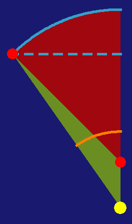
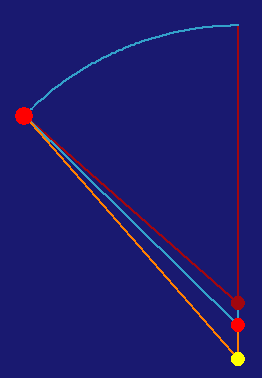

We now have a principle governing the motion of the planets -- the gravitational species of the sun, and a hypothesized shape of the orbit -- a circle. In this chapter, Kepler applies his physical principle to the shape of a circle. He'll compare his results with the vicarious hypothesis in Part II to see how correct he is. We'll take his example of 45° of eccentric anomaly:

Here, the blue arc is the eccentric angle of 45°. The area of the green triangle is ½sin(45°)×eccentricity, which, expressed as a portion of the total circular area (360°), is 3°45'12". This makes the entire area swept out (the mean anomaly):
45° + 3°45'12" = 48°45'12" mean anomaly
Performing trigonometry on the lines here, he determines the equated angle to be: 41°28'54" equated anomaly
Now, we can use the vicarious hypothesis to determine whether the mean anomaly given here corresponds to the equated anomaly.

Here we have the vicarious hypothesis of chapter 16, with the proper eccentricities between the sun (yellow), center (red), and equant (dark red). The orange angle is the equated anomaly, the blue is the eccentric anomaly, and the dark red the mean anomaly. Using the same mean anomaly as above, 48°45'12", the vicarious hypothesis gives an equated anomaly of 41°20'33".
This gives a difference between this hypothesis and the vicarious hypothesis of 41°28'54" - 41°20'33" = 8'22".
Here, a diagram of where the different methods of determining the equations disagree:
Some may think that this error is the result of the trouble with using areas. The area is not exactly the sum of the distances of the planet from the sun, as shown in chapter 40. Here, Kepler develops the maximum error that could be thus occasioned as being 4¼' spread over the entire orbit, much smaller than the 8'22" error found here. So the means of adding distances to make an area is not the problem.
Consequently, we must seek another occasion for this discrepancy.